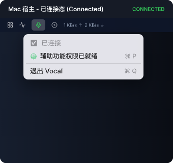

REAL APP SCREENSHOTS
真实双端协同：极简设计，极致纯粹
手机专精于高精度语音捕获与文字校对，电脑端静默常驻在系统栏负责焦点文字注入。

📱 本地草稿 + 手动发送： 支持语音听写、软键盘修改错别字、多语言随时切换，点击“发送到 Mac”完成推送。
局域网 WebSocket 极速直连

💻 菜单栏常驻 + 全局输入： 零 Dock 干扰，支持 mDNS 服务自动广播，通过 Accessibility API 模拟 Unicode 击键。